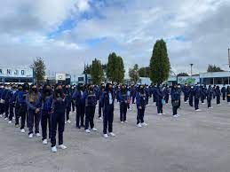
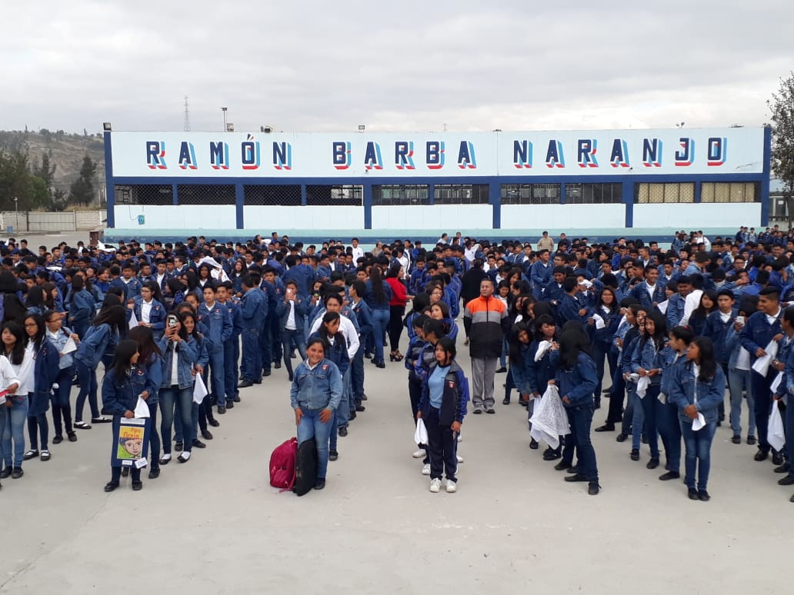
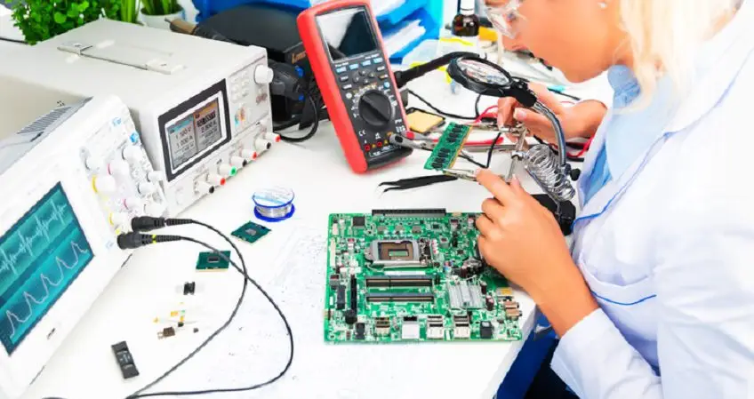

Matutina: los horarios son de 7:00 a 13:00

Vespertina los horarios son de las 12:00 a 18:00
El UNIDAD EDUCATIVA RAMON BARBA NARANJO se encuentra ubicado en la provincia de Cotopaxi,
en el cantón Latacunga de la parroquia Ignacio Flores (Parque Flores). Es un centro educativo
de Ecuador perteneciente a la Zona 3 geográficamente es un centro educativo urbano, su modalidad
es Presencial en jornada Matutina y Vespertina, con tipo de educación regular y con nivel educativo:
Inicial, Educación Básica y Bachillerato.
Institución educativa que obtiene sus recursos para desarrollar sus actividades (Sostenimiento) de manera
Fiscal, está en el régimen escolar Sierra y se puede llegar al establecimiento de manera terrestre.
Tienen un total aproximado de 122 docentes y 2982 estudiantes.
Especialidad de Electricidad. Este profesional de nivel medio está capacitado para realizar trabajos de diseño, instalación, montaje y mantenimiento de redes y sistemas eléctricos domiciliarios, públicos e industriales que empleen energía eléctrica de media y baja tensión
Realizar el diagnóstico y mantenimiento de los sistemas eléctricos y electrónicos del vehículo automotor, considerando las especificaciones técnicas y normas de seguridad e higiene laboral.

La electrónica de consumo engloba todos los equipos electrónicos utilizados cotidianamente y que generalmente se utilizan para el entretenimiento, las comunicaciones y la oficina.
El Ingeniero Industrial cubre las actividades de producción de bienes y servicios, relacionando principios de la tecnología y la organización, para hacer más eficiente los sistemas productivos. El Ingeniero Industrial es un profesional estrechamente relacionado con la creación del producto.